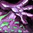
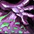
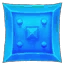

General |
General |  Druid |
Druid |  Hunter |
Hunter |  Mage |
Mage |  Paladin |
Paladin |  Priest |
Priest |  Rogue |
Rogue |  Shaman |  Warlock |
Shaman |  Warlock |  Warrior
Warrior
General
/cast [target=mouseover,exists][target=target,exists][target=player] SPELLNAME
/cast [target=mouseover, exists][help][target=enemy] SPELLNAME
/cast SPELLNAME
/cast SPELLNAME
/cancelaura SPELLNAME
/cast [harm] SPELLNAME; [help] SPELLNAME
/cast SPELLNAME
/cast [mod:alt,target=player][target=mouseover,exists][help][] SPELLNAME
#showtooltip Master Healthstone
/use item:22105
/use item:22104
/use item:22103
/script SetCVar("cameraDistanceMax",50)
#showtooltip SPELLNAME
/run local p="SPELLNAME"local t,f,s,d=" ready!",math.floor,GetSpellCooldown(p)local c=s+d-GetTime()local m,r=f(c/60),f(c%60)if d>0 then t=": "..m.."m "..r.."s"end;SendChatMessage(p..t,UnitInRaid("Player")and"RAID"or"PARTY")
#showtooltip
/run if GetSpellCooldown("SPELLNAME")==0 then DBM.StartStatusBarTimer(TIME,"SPELLNAME","Interface\Icons\Spell_HolyAshesToAshes") end
/cast SPELLNAME
/run local f=CreateFrame("frame",nil, UIParent);function g() DEFAULT_CHAT_FRAME:AddMessage("foo"); end; f:SetScript("OnUpdate", CombatLogClearEntries)
/run MainMenuBarLeftEndCap:Hide(); MainMenuBarRightEndCap:Hide()
Clear:
/script UIErrorsFrame:Clear()
Hide:
/script UIErrorsFrame:Hide()
Show:
/script UIErrorsFrame:Show()
Target:
/script SetRaidTarget("target", MARKNUMBER)
Mouseover:
/script SetRaidTarget("mouseover", MARKNUMBER)
/script DEFAULT_CHAT_FRAME:AddMessage((((GetUnitManaRegenRateFromSpirit("player"))*80)+((GetManaRegen("player"))*20)),0,0.1,1)
/run j=GetLootMethod() k=UnitLevel("target") if (k<0 and IsRaidLeader() and j=="group") then SetLootMethod("master","YOURNAME") end
/script bbgn=mod((bbgn or 1)-1,3)+2; local t = 1; for i=1,40 do local _,_,g = GetRaidRosterInfo(i); if g==bbgn then SetRaidTarget("raid"..i,t); t=t+1; end end SendChatMessage("GROUPNAME "..bbgn,"RAID_WARNING");
/script local i,s,g,u,c={"star","circle","diamond","triangle","moon","square","cross","skull"},SendChatMessage,GetRaidTargetIndex("target"),UnitName("target"),"RAID_WARNING" if g then s("Target: {"..i[g].."} "..u,c)else s("Target: "..u,c)end
/script local fps = GetFramerate(); down, up, lag = GetNetStats(); SendChatMessage("Latency: "..lag.." ms // FPS: "..floor(fps), say);
/run local down,up,lag=GetNetStats() DEFAULT_CHAT_FRAME:AddMessage("down: "..down.."\nup: "..up.."\nlatency: "..lag.." ms")
/run local i=1 while UnitBuff("player",i) do DEFAULT_CHAT_FRAME:AddMessage(UnitBuff("player",i)); i=i+1 end
/script for i = 1, 40 do local u = "raid"..i; local hp = UnitHealthMax(u); local _, _, grp = GetRaidRosterInfo(i); if UnitExists(u) and hp < HEALTHVALUE and grp <= 5 then ChatFrame1:AddMessage(UnitName(u)..": "..hp.." HP"); end end
/run nf="[Flask!]: ";for i=1,GetNumRaidMembers()do for b=1,41 do ufl=UnitAura('raid'..i,b);if ufl then if strfind(ufl,"Flask")then break;end;elseif b==41 then nf=nf..UnitName('raid'..i).." ";end;end;end;SendChatMessage(nf,"raid");
/run local _,_,t=GetSpellInfo(SPELLID) for i=1,40 do local _,_,x=UnitBuff("player",i) if x==t then CancelPlayerBuff(i) end end
/script local t={1,3,5,6,7,8,9,10,16,17,18}; for k,v in pairs(t) do PickupInventoryItem(v); PutItemInBag(22); end
/script for bag = 0, 4 do for slot = 1, GetContainerNumSlots(bag) do local name = GetContainerItemLink(bag,slot) if name and string.find(name,"ff9d9d9d") then DEFAULT_CHAT_FRAME:AddMessage("Selling "..name) UseContainerItem(bag,slot) end end end
/run LoadAddOn"Blizzard_TrainerUI" f=ClassTrainerTrainButton f.e=0 if f:GetScript"OnUpdate" then f:SetScript("OnUpdate",nil) else f:SetScript("OnUpdate",function(f,e) f.e=f.e+e if f.e>.01 then f.e=0 f:Click() end end) end
#showtooltip Cyclone
/cast [target=focus, modifier:shift] Cyclone; Cyclone
#showtooltip Entangling Roots(Rank 1)
/cast [target=focus] Entangling Roots(Rank 1)
/script DEFAULT_CHAT_FRAME:AddMessage(2.6-(GetCombatRatingBonus(CR_DEFENSE_SKILL)*.04+GetCombatRatingBonus(CR_CRIT_TAKEN_MELEE)),1,0.5,0)
/run local f="Dire Bear Form";f=GetSpellCooldown(f)>0 or UnitMana('player')>XXX or not IsUsableSpell(f) or CancelPlayerBuff(f)
/stopmacro [form:1]
/use Master Healthstone
/use Healing Potion Injector
/cast Dire Bear Form
/cast !Cat Form
/run local f="Cat Form";f=GetSpellCooldown(f)>0 or UnitMana('player')>MANAVALUE or not IsUsableSpell(f) or CancelPlayerBuff(f)
/stopmacro [form]
/cast Cat Form
#showtooltip Steady Shot
/cast Steady Shot
/cast [exists,target=pettarget] Kill Command
/run UIErrorsFrame:Clear();
#show [modifier:alt] FOODNAME
/cast [nopet] Call Pet
/cast [dead][mod:shift] Revive Pet
/cast [pet,nomod,button:1] Mend Pet
/cast [pet,nomod,button:2] Dismiss Pet
/cast [pet,mod:alt] Feed Pet
/use [pet,mod:alt] FOODNAME
#showtooltip Misdirection
/cast [target=focus] Misdirection
/s Misdirection on %f
/script h,_,l=GetPetHappiness();DEFAULT_CHAT_FRAME:AddMessage("Happy: " .. h .. " - Loyalty: " .. l);
#showtooltip Ice Block
/stopcasting
/cast Ice Block
/cast [noharm][noharm,target=targettarget][] Righteous Defense
/script DEFAULT_CHAT_FRAME:AddMessage("Need 102.4 combined avoidance. Currently at:",0.8,0.8,1)
/script DEFAULT_CHAT_FRAME:AddMessage(GetDodgeChance()+GetBlockChance()+GetParryChance()+5+(GetCombatRating(CR_DEFENSE_SKILL)*150/355 + 20)*0.04,1,0.5,0)
#showtooltip Mind Flay
/cast [nochanneling] Mind Flay
#showtooltip Kick
/cast [target=focus] Kick
/castsequence reset=10 Stormstrike, Windfury Totem, Grace of Air Totem
#showtooltip Nature's Swiftness
/cast Nature's Swiftness
/stopcasting
/cast [help] Healing Wave(Rank 12); [target=player] Healing Wave(Rank12)
/run i="Soul Shard"d=GetItemCount(i)-30 for x=0,4 do for y=1,GetContainerNumSlots(x) do if (d>0) then l=GetContainerItemLink(x,y) if l and GetItemInfo(l)==i then PickupContainerItem(x,y) DeleteCursorItem() d=d-1 end end end end
/cast Drain Soul(Rank 1)
/script DEFAULT_CHAT_FRAME:AddMessage("Need 102.4 combined avoidance. Currently at:",0.8,0.8,1)
/script DEFAULT_CHAT_FRAME:AddMessage(GetDodgeChance()+GetBlockChance()+GetParryChance()+5+(GetCombatRating(CR_DEFENSE_SKILL)*150/355 + 20)*0.04,1,0.5,0)
This countdown will sync with people who are also using DBM. Spamming the macro doesn't create extra bars.
To use the macro for a spell you want to use, you should replace SPELLNAME in the macro, and TIME with the amount of uptime your spell has in seconds. ↩
Replace MARKNUMBER with the mark of your choosing:
1:
2:
3:
4:
5:
6: 
7:
8: ↩
If you're a raid leader and often forget to turn master loot on, add this macro to one of the macros you regularly use.
Make sure to also replace YOURNAME with your character's name. ↩
Spamming this macro will mark groups (starting from Group 2). With each press, you will mark the next group. The order goes like this: Group 2 > Group 3 > Group 4. After you marked group 4, you'll go back to marking group 2, so the macro rotates. This is useful on variety of bosses where a group has to perform a certain act, like Gurtogg Bloodboil in Black Temple.
Feel free to replace the name of the group (that will show up within the chat announcement) by replacing GROUPNAME. ↩
If you have dumber than usual DPS players who refuse to single target mobs, this will announce the target you want them to DPS down. If your target has a mark, it will also be included in the raid warning. Make sure you yourself target the mobs before you use this macro. ↩
Replace HEALTHVALUE with the HP threshold you'd like. ↩
Replace SPELLID with the spell ID of the buff you want to remove. ↩
Be very careful using this. It's not visible but you do get out of form when you use this macro and if your target swings at you at that particular time, you will die.
Same as the Smart Powershift macro, make sure to change the value of n with the mana threshold you don't want powershifting to drop you below, so you don't stand in front of your target out of form with no mana to get back in form like a tool. ↩
Replace MANAVALUE with the mana threshold you don't want powershifting to drop you below. ↩
If you want to change amount of shards you want to keep, change the amount 30 within the macro. ↩